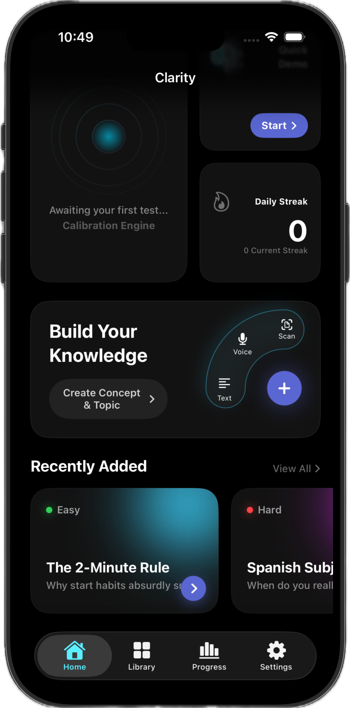
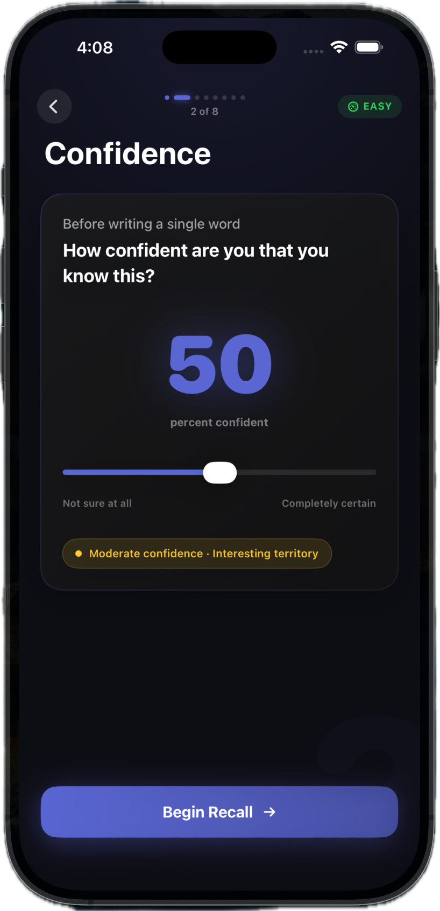
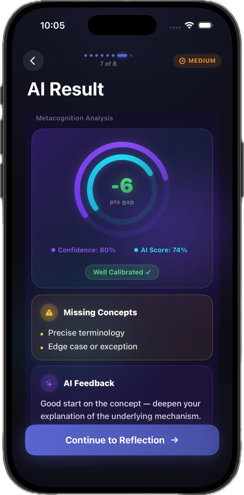
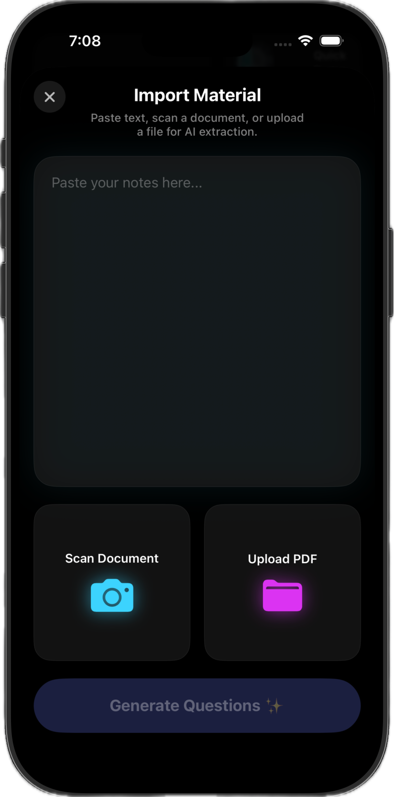
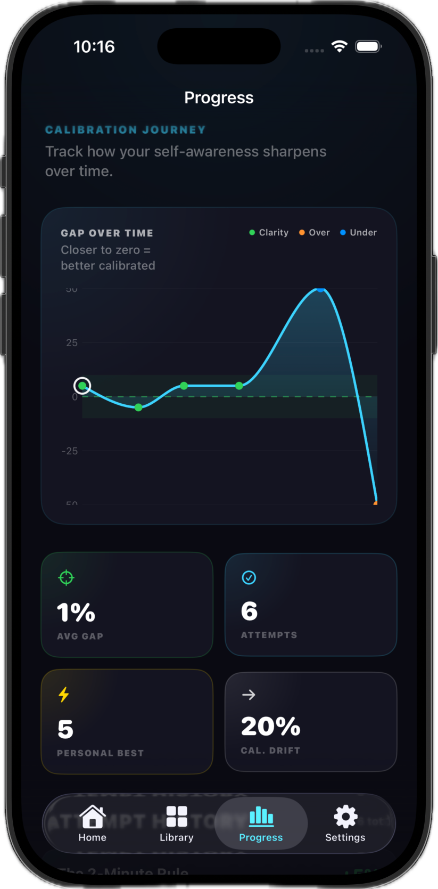
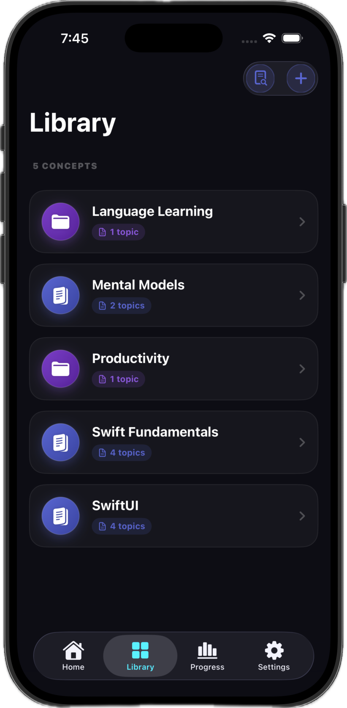

Bring your material
Paste a paragraph from your notes, photograph a page, or type a question yourself. Clarity reads it and writes a question that tests understanding rather than a single keyword.
Rereading your notes feels like learning. Clarity checks whether it was. Predict your score, answer for real, and watch the gap between the two close.
Try it: how well do you know this?
“Explain why TCP uses a three-way handshake.”
Drag the slider to see how Clarity reads the gap.
Recognition is easy and recall is hard, so highlighting a page feels productive while teaching you almost nothing. The gap only shows up in the exam hall, the interview, the moment someone asks you to explain it out loud.
Clarity makes that gap visible while you can still do something about it — one question at a time, scored honestly, tracked over weeks.
Every test follows the same loop, so the numbers stay comparable across subjects.
Paste a paragraph from your notes, photograph a page, or type a question yourself. Clarity reads it and writes a question that tests understanding rather than a single keyword.
Before you answer, say how confident you are. This is the step that makes everything else work — an unrecorded hunch is easy to revise after the fact.
Type it, say it, or photograph a handwritten answer. On-device intelligence grades what you actually produced and explains where it fell short.
Your prediction and your score land on the same dial. Over time the distance between them is the real measure of whether you're learning or just revisiting.
The distance between how sure you felt and how well you did.
Topics where you keep overestimating yourself rise to the top automatically, so revision starts with the material that will actually cost you marks.
Paste a paragraph and Clarity drafts the question and the hint for you.
Answer by voice, the way you'd have to in a viva. Transcribed on device.
Every attempt is plotted against the prediction you made before answering. Those two lines converging is the thing you're actually training — and the only honest signal that studying is working.
Spaced repetition schedules each topic from your last score, and one daily reminder tells you what's due.
Worked it out on paper? Snap it. Clarity reads the page and marks it like any other attempt.
Clarity has no account and no backend. Your concepts, answers and test history live in one place — the device in your hand.
Swipe through the screens you'll spend the most time in.






No. Grading, question generation and speech transcription all run on device, so the app works fully offline.
Grading uses Apple's on-device intelligence, which needs a recent iPhone and a supported iOS version. On other devices Clarity falls back to a simpler local grader — every other feature works the same.
Flashcards ask whether you got it right. Clarity also asks whether you knew you would. Grading your own recall as “easy” or “hard” after seeing the answer is exactly where the illusion of competence hides, so Clarity records your prediction before you answer and scores the answer independently.
Within ten points either way is well calibrated. Predicting far above your score means you're overconfident on that topic; far below means you know more than you're giving yourself credit for. Both are useful, and both narrow with practice.
Check the App Store listing for current pricing.
There's nothing to sell. Clarity has no server, so your data never reaches us in the first place. The Privacy Policy spells out the details.
Find out in ninety seconds, on a phone that keeps it to itself.
Download on the App Store